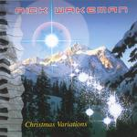

Home Artist links Label link

Rick Wakeman - Christmas Variations
| Artist: | Rick Wakeman |
| Title: | Christmas Variations |
| Label: | Mascot Records M 7087 2 |
| Length(s): | minutes |
| Year(s) of release: | 2003 |
| Month of review: | [12/2003] |
Line up
Rick Wakeman - all kinds of keyboards
Tracks
| 1) | Silent Night | 4.35
|
| 2) | Hark The Herald Angels Sing | 6.19
|
| 3) | Christians Awake, Salute The Happy Morn | 7.02
|
| 4) | Away In A Manger | 5.28
|
| 5) | While Shepherds Watch Their Flocks By Night | 5.33
|
| 6) | O Little Town Of Betlehem | 6.06
|
| 7) | It Came Upon A Midnight Clear | 5.14
|
| 8) | Once In Royal Davids City | 4.58
|
| 9) | O Come All Ye Faithful | 5.16
|
| 10) | Angels From The Realms Of Glory | 4.27
|
Summary
Rick Wakeman is known by all who visit this website, I will assume.
I was quite enamoured by his Out There with ERE. Now something else
again: an album with christmas songs. Of course, Rick has been working
with church choirs and gospel music regularly so it should not be
too surprising. That he also 'covers' music is also evident from
his Tribute To The Beatles album (interesting to hear what you can
do with a song like Help). No surprise then. Let us see if he
can surpass what I still think is the most appealling Christmas
album: Sounds Like Christmas by The December People.
The music
The best version of Silent Night I know is by Sinead O'Connor and
Peter Gabriel and this version will not change that. A sugary and
peaceful rendition with the variations Rick talks of in the booklet.
No vocals on this one, as in fact on none of the tracks.
There are quite large distinctions between Wakeman's version of
Hark The Herald Angels Sing and the rather icky vocal version of this
carol. The basic melody is in tact, of course, but Wakeman has
applied some amerliorations, but also kept the song serene.
Later the piano becomes more busy.
I am not familiar myself wiwht Christians Awake, Salute The Happy Morn,
but being the kind of song it is, it is not surprising to hear
a romantic piano melody. In fact, the music comes quite close to
the music of David Lanz.
Away In A Manger is a title that is not familiar to me, but the
melody does turn out to be so. Again, very melodic. I like it best
in the parts where the wind like keys dominate. Here the music is fuller
and noisier.
While Shepherds Watch Their Flocks By Night is a more moody tune, while
O Little Town Of Betlehem is again quite merry and friendly.
It makes little sense to continue: the remaining songs all exude
a quiet, serene mood, fitting for the holidays, but that interesting
for a progressive rock site.
Conclusion
What can I say? This is a Christmas album, no doubt about it. The Christmas
spirit is present, the variations of Wakeman are in fact quite nice
to listen to, also because he will not fall into the trap of
resorting to easy singalong arrangements and lots of vocals. A serene album dominated by piano, but also including plenty of keyboards for an occasional fuller
sound. But it is still a Christmas album and only something as
background music during a (christmas) dinner. When the family has left, though, I think I will put the December People on.
© Jurriaan Hage